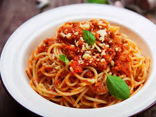

Beef wellington
90 minutes
Ingredients:
- 2 x 400g beef fillets
- Olive oil, for frying
- 500g mixture of wild mushrooms, cleaned
- 1 thyme sprig, leaves only
- 8 slices of parma ham
- 2 egg yolks, beaten with 1 tbsp of water and a pinch of salt
- Sea salt and freshly ground black pepper
- 2 tbsp olive oil
- 200g beef trimmings (ask the butcher to reserve these when trimming the fillet)
- 4 large shallots, peeled and sliced
- 12 black peppercorns
- 1 bay leaf
- 1 thyme sprig
- Splash of red wine vinegar
- 1 x 750ml bottle of red win
- 750ml beef stock
Instructions:
- Wrap each piece of beef tightly in a think layer of cling film to set its shape, then chill overnight.
- Remove the cling film, then quickly sear the beef fillets in a hot pan with a little olive oil for 30-60 seconds until browned all over and rare in the middle. Remove from the pan and leave to cool.
- Finely chop the mushrooms and fry in a hot pan with a little olive oil, the thyme leaves and some seasoning. When the mushrooms begin to release their juices, continue to cook over a high heat for about 10 minutes until all the excess moisture has evaporated and you are left with a mushroom paste (known as a duxelle). Remove the duxelle from the pan and leave to cool.
- Cut the pastry in half, place on a lightly floured surface and roll each piece into a rectangle large enough to envelop one of the beef fillets. Chill in the refrigerator.
- Lay a large sheet of cling film on a work surface and place 4 slices of Parma ham in the middle, overlapping them slightly, to create a square. Spread half the duxelle evenly over the ham.
- Season the beef fillets, then place them on top of the mushroom-covered ham. Using the cling film, roll the Parma ham over the beef, then roll and tie the cling film to get a nice, evenly thick log. Repeat this step with the other beef fillet, then chill for at least 30 minutes.
- Brush the pastry with the egg wash. Remove the cling film from the beef, then wrap the pastry around each ham-wrapped fillet. Trim the pastry and brush all over with the egg wash. Cover with cling film and chill for at least 30 minutes.
- Meanwhile, make the red wine sauce. Heat the oil in a large pan, then fry the beef trimmings for a few minutes until browned on all sides. Stir in the shallots with the peppercorns, bay and thyme and continue to cook for about 5 minutes, stirring frequently, until the shallots turn golden brown.
- Pour in the vinegar and let it bubble for a few minutes until almost dry. Now add the wine and boil until almost completely reduced. Add the stock and bring to the boil again. Lower the heat and simmer gently for 1 hour, removing any scum from the surface of the sauce, until you have the desired consistency. Strain the liquid through a fine sieve lined with muslin. Check for seasoning and set aside.
- When you are ready to cook the beef wellingtons, score the pastry lightly and brush with the egg wash again, then bake at 200°C/Gas 6 for 15-20 minutes until the pastry is golden brown and cooked. Rest for 10 minutes before carving.
- Meanwhile, reheat the sauce. Serve the beef wellingtons sliced, with the sauce as an accompaniment.